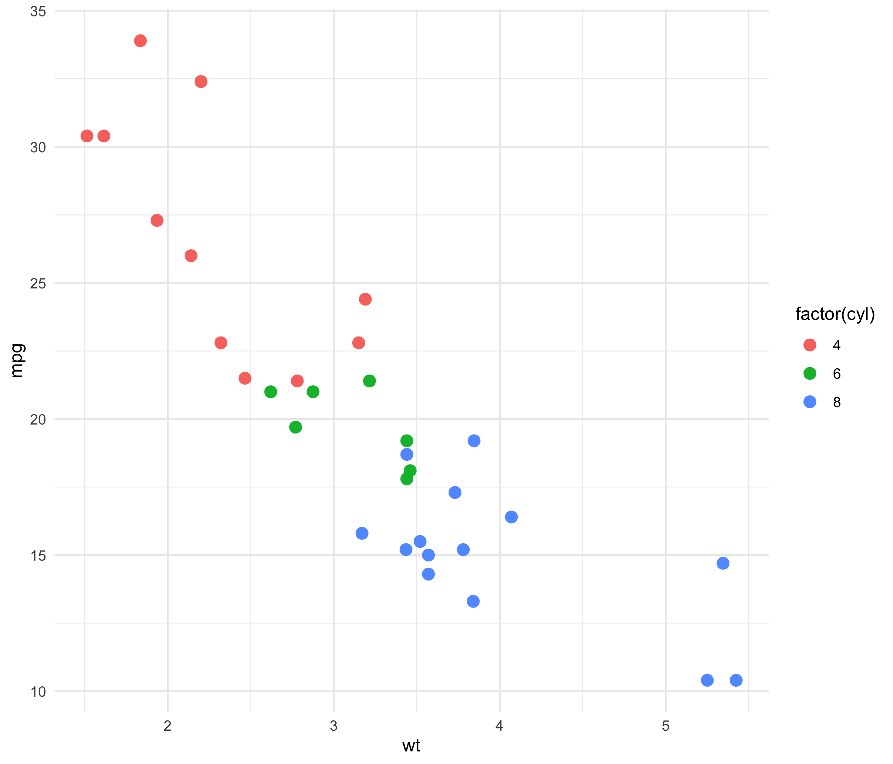
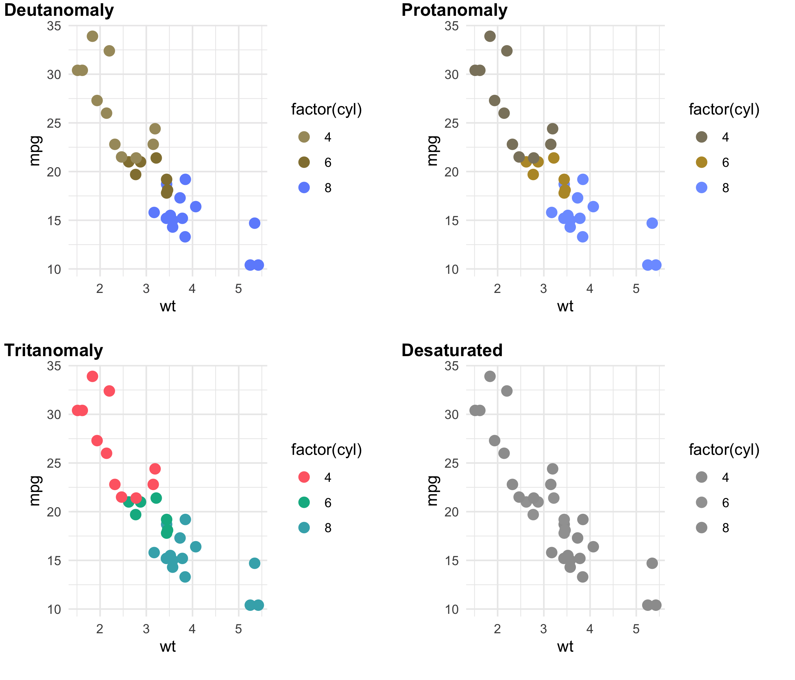
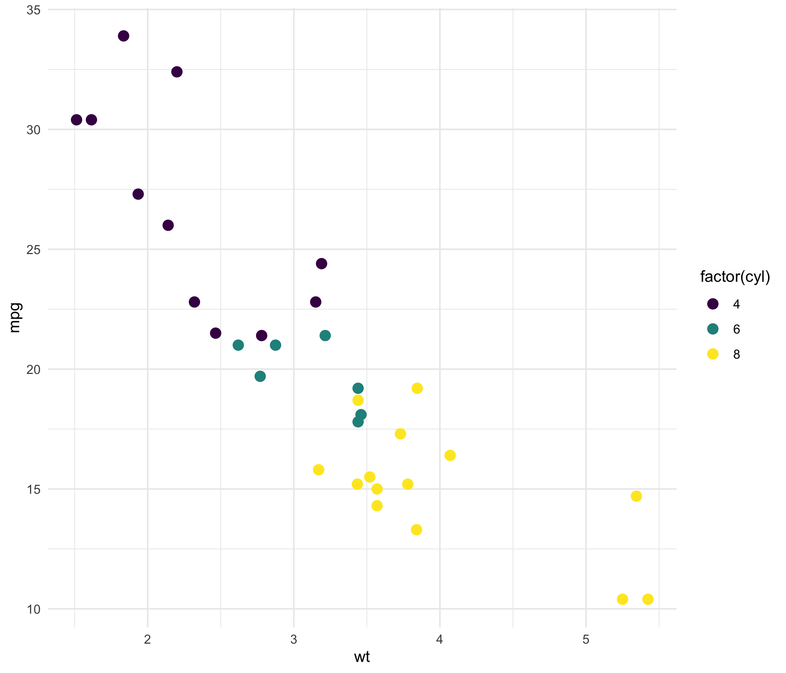
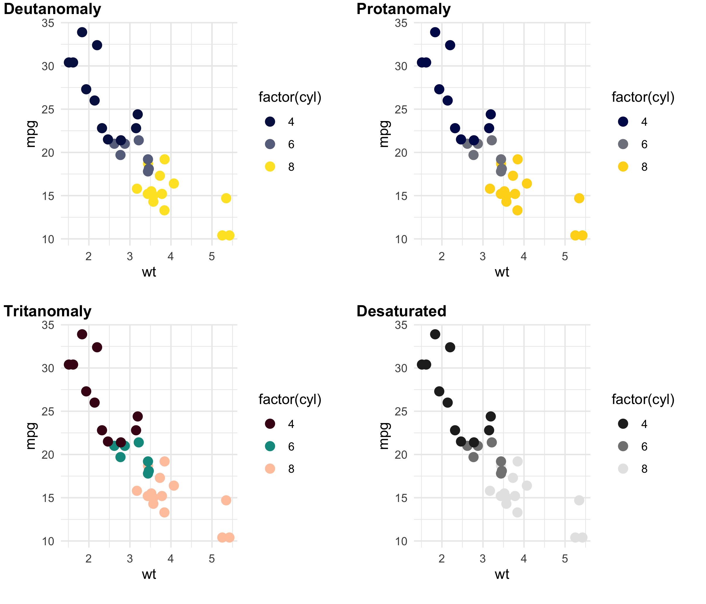
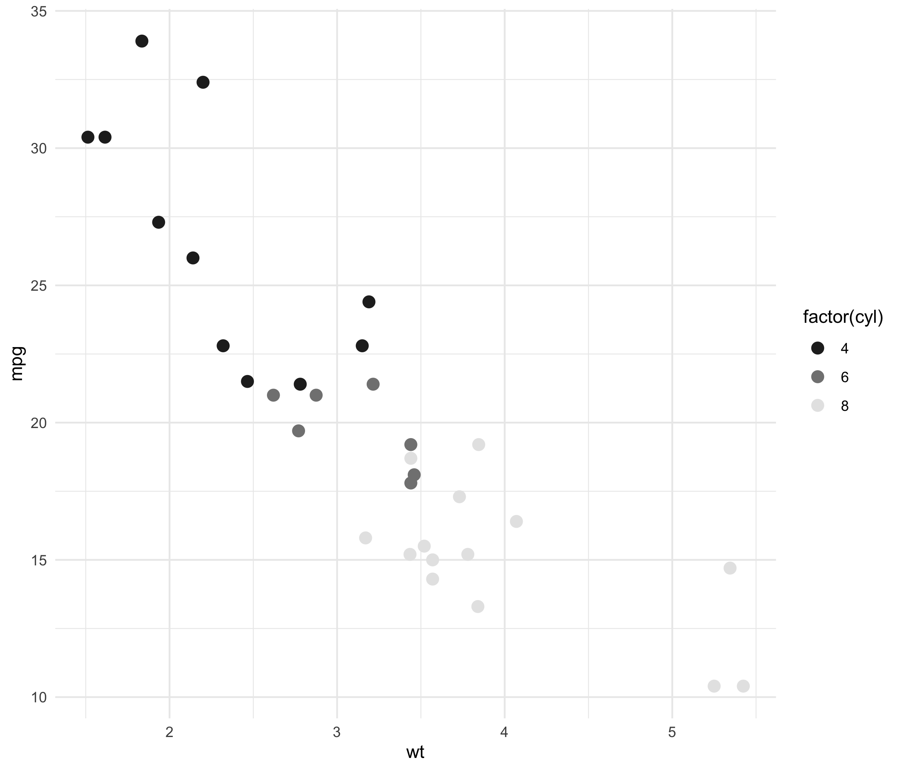

![]()
We’ll need a few extra libraries before we can get started. The primary means we’ll use to examine the desaturated figures (and look for issues with colorblindness) is colorblindr. This depends on the development versions of cowplot and colorspace (the latter we’ll use to desaturate) so we need to make sure those two are install before we install colorblindr.
devtools::install_github("wilkelab/cowplot")
install.packages("colorspace")
devtools::install_github("clauswilke/colorblindr")Once that’s all done, we can load up tidyverse and our newly installed libraries and get to making a figure. This part is totally up to you, but I’ve created a very common plot using the included mtcars data in R.
library(tidyverse)
library(cowplot)
library(colorspace)
library(colorblindr)
plot.data <- mtcars
p <- ggplot(plot.data, aes(x = wt, y = mpg, color = factor(cyl))) +
geom_point(size = 3) +
theme_minimal()This uses the built in color scheme.

If we wanted to desaturate this figure, what would it look like? How would we know if there is appropriate color separation so the reader could determine the various cyl levels? colorblindr gives us two ways to preview this; one static and one interactive.
cvd_grid(p) # prints grid of colorblind types
view_cvd(p) # starts an interactive appAs can be seen below, the standard color palette in ggplot is ok (but not great) on three of the colorblindness scales, but completely falls flat on desaturation. There’s no separation between the number of engine cylinders.

How can we fix this? First, we need a new color scale. I am partial to viridis as it is designed to solve many of the problems outlined above (and built into R).
p.viridis <- p +
scale_colour_viridis_d()
When we subject this new figure to our colorblindness test, it performs much better. Important for our purposes, there is ample separation for desaturation.
cvd_grid(p.viridis)
How to desaturate
Once we have a figure that is amenable to desaturation, how do we do it? That’s where colorspace comes in. It can do far more than we are going to use it for (see the CRAN vignette for more info), but it makes desaturating a breeze.
p.des.viridis <- edit_colors(p.viridis, desaturate)
ggdraw(p.des.viridis)Using edit_colors(foo, desaturate), we can completely desaturate our figure. And ggdraw plots the figure for easy viewing. As can be seen below, our mission is accomplished.

The last step is to save the figure for upload. I tend to save these files as PDFs; however, the journal likely has its own preferred file format (TIFF being really common).
ggsave(plot=p.des.viridis, "p_des_viridis.pdf", dpi=300, device = cairo_pdf)And that’s it! Easy, reproducible desaturation (with a brief sidebar into colorblind friendly color palettes).